חובותיי
חוק הלימוד היומי שליבוחרים אילו חובות לימוד לוקחים על עצמכם, מסמנים בכל יום מה למדתם, ומקבלים תזכורת למה שעוד פתוח. ספר PDF או סדרת שיעורים נפתחים בלחיצה אחת, בדיוק בעמוד או בשיעור של היום.
הורד 13 פעמים כל המספרים
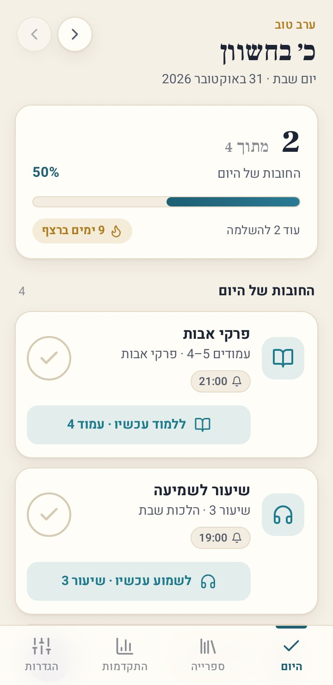
מה חדש
גרסה 1.0.2- חדש: שיתוף האפליקציה עם חברים (הגדרות ← שיתוף האפליקציה): הודעה קצרה עם קישור לאתר, או האפליקציה עצמה כקובץ בבלוטות', בוואטסאפ או במנהל הקבצים, גם בלי אינטרנט
- לחובותיי יש עכשיו אתר עם הסבר לכל כפתור והורדה: luach-sport.github.io/chovotai
- בתחתית ההגדרות: פותח על ידי Itzko
עובדת לגמרי בלי אינטרנט
- הכל בתוך האפליקציה: החובות, הסימונים, הגופנים ומנוע קריאת ה-PDF. אין שרת ואין חשבון.
- ספרים ושיעורים שהוספתם מועתקים לטלפון, ונפתחים גם בטיסה, בשבת בבוקר או במקום בלי קליטה.
- התזכורות מתוזמנות בטלפון לשבוע קדימה, ולכן מגיעות גם כשהאפליקציה סגורה ובלי אינטרנט.
- שליחת האפליקציה לחבר כקובץ (בבלוטות' או במנהל הקבצים) עובדת גם היא בלי אינטרנט.
שום מידע לא יוצא מהטלפון. אינטרנט צריך רק כדי להוריד את האפליקציה או גרסה חדשה שלה.
התקנה
- מורידים
לוחצים "הורדה לאנדרואיד" למעלה. הקובץ chovotai.apk יורד לטלפון.
- מתקינים
פותחים את הקובץ מההתראות או מתיקיית ההורדות. בפעם הראשונה מאשרים "התקנה ממקור לא ידוע".
- בוחרים חובות
בפתיחה הראשונה מסמנים חובות מתוך הרשימה (או מדלגים), בוחרים שעה לסיכום היומי ולוחצים "בואו נתחיל".
אם מופיעה אזהרה של Google Play Protect על אפליקציה לא מוכרת, בוחרים להתקין בכל זאת. זה קורה בכל אפליקציה שלא הורדה מחנות Google Play. צריך אנדרואיד 7 ומעלה.
פתיחה ראשונה
שני מסכים קצרים, ואפשר להתחיל ללמוד.
- מה תרצה לקחת על עצמך?מסמנים כמה חובות שרוצים מתוך 12 מוכנות: דף יומי, משנה יומית, הלכה יומית, רמב״ם יומי, חומש ורש״י, תהילים, שמירת הלשון, תניא יומי, שיעור לשמיעה, ספר מוסר, חזרה שבועית וקביעות עיתים. אפשר גם לדלג ולבנות לבד.
- תזכורת סוף יוםמפעילים, בוחרים שעה (ברירת המחדל 21:30) ועיר, כדי שהתזכורות ישתקו בשבת ובחג לפי זמני העיר.
- בואו נתחילהחובות נכנסות למסך "היום", והטלפון מבקש רשות לשלוח התראות.
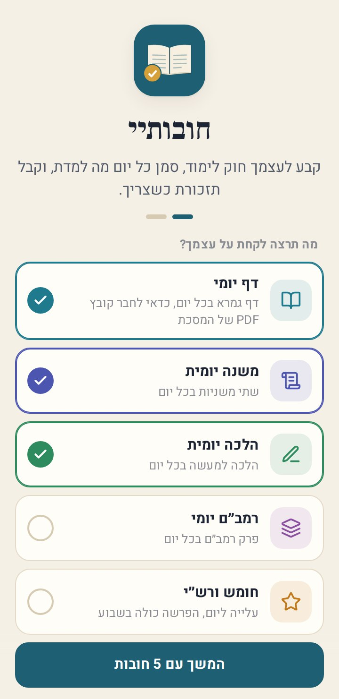
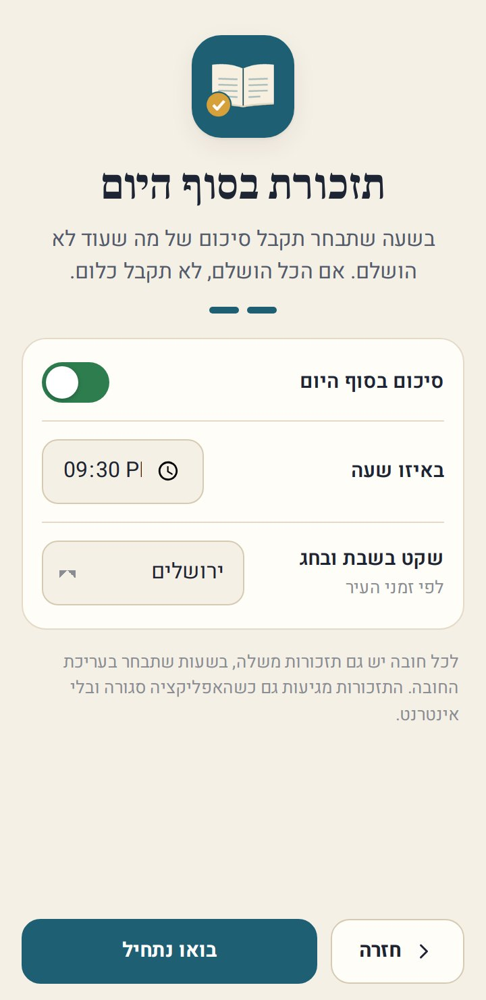
היום
כל מה שצריך ללמוד היום, ומה כבר הושלם.
- התאריך למעלהברכה לפי השעה, התאריך העברי בגדול והתאריך הלועזי. החיצים עוברים ליום קודם, כדי לסמן גם יום שעבר, וחזרה להיום.
- כרטיס ההתקדמות"2 מתוך 4", אחוז, פס שמתמלא במשך היום (ירוק כשהכל הושלם), כמה נשאר, ורצף הימים.
- עיגול הסימוןלחיצה אחת מסמנת שלמדתם. בחובה של כמה פעמים ביום מופיע 1/2. לחיצה על עיגול מלא מבטלת.
- ללמוד עכשיו"ללמוד עכשיו · עמוד 4" או "לשמוע עכשיו · שיעור 3": פותח את הספר או השיעור בדיוק במקום של היום.
- התגיות בכרטיסהתזכורת הבאה (🔔 21:00), נקודות התקדמות, "באיחור של יומיים" בחובה של כל כמה ימים, ותדירות שאינה יומית.
- לחיצה על הכרטיספותחת את פרטי החובה.
- ביטולאחרי כל סימון מופיעה הודעה קצרה ("אשריך!", מה נלמד ומה הבא בתור) עם כפתור ביטול.
- יעדים לשבוע ולחודשחובות של "פעמיים בשבוע" או "בחודש" מופיעות כאן עד שמגיעים ליעד.
- לא להיוםחובות שלא מגיעות היום, עם "הבא: מחר" או "ביום חמישי".
- + הוספת חובהבתחתית המסך. הוספה ועריכה
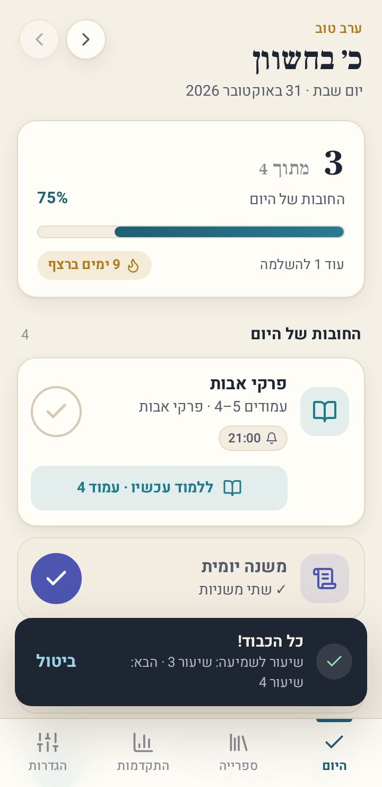
פרטי חובה
חלון קטן מלמטה עם כל מה שקשור לחובה הזו.
- הבא בתורמה לומדים עכשיו, למשל "עמודים 4–5".
- מה נלמד היוםכל לימוד שסומן ביום הזה, עם השעה. את האחרון אפשר לבטל.
- סימוןמסמן שלמדתם, גם כלימוד נוסף מעבר למה שנדרש.
- ללמוד עכשיופותח את הספר או השיעור במקום הנכון.
- שינוי המקום בספרלמשל לקפוץ לעמוד 120, או לשיעור אחר בסדרה.
- עריכהכל ההגדרות של החובה. הוספה ועריכה
- השהיהלתקופה, בלי תזכורות ובלי לשבור את הרצף.
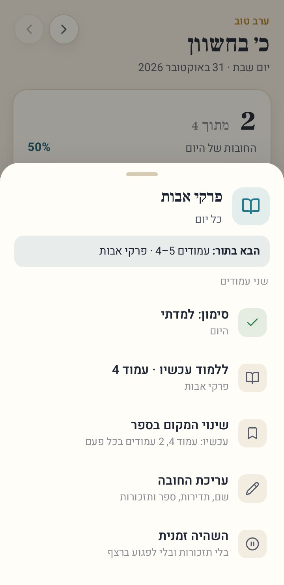
הוספה ועריכה של חובה
מתחילים מחובה מוכנה או מ"חובה חדשה משלי", ותמיד אפשר לשנות הכל לפני השמירה.
- שם, סמל וצבעשם חופשי, 12 סמלים ו-8 צבעים.
- כל כמה זמןכל יום, ימים קבועים (בוחרים ימים מא׳ עד ש׳), כל כמה ימים (פעם ב-2 עד 60 ימים), בשבוע (1–7 פעמים, באיזה יום שנוח) או בחודש (לפי החודש העברי).
- כמה פעמים ביוםעד 10, למשל קביעות עיתים בבוקר ובערב.
- מה לומדיםתיאור קצר, ובחירה: בלי קובץ, ספר PDF או קובץ שמע.
- ספר PDFבוחרים ספר מהספרייה (או מוסיפים חדש ישר מכאן), עמוד התחלה וכמה עמודים בכל פעם.
- קובץ שמעבוחרים סדרה, "שיעורים שלמים" או "מספר דקות", כמה בכל פעם ומאיזה שיעור מתחילים.
- תזכורותעד 5 שעות ביום לכל חובה.
- השהיה ומחיקהבעריכה של חובה קיימת. מחיקה רק אחרי אישור.
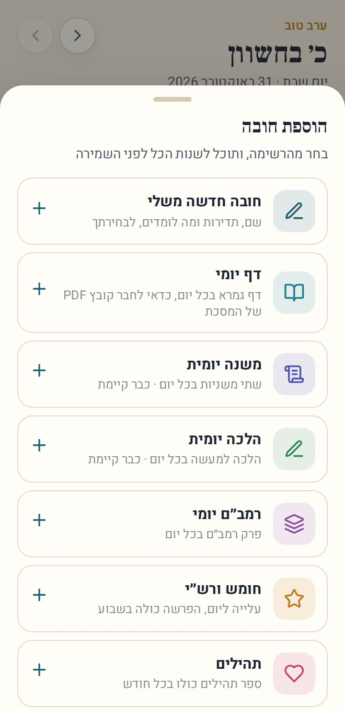
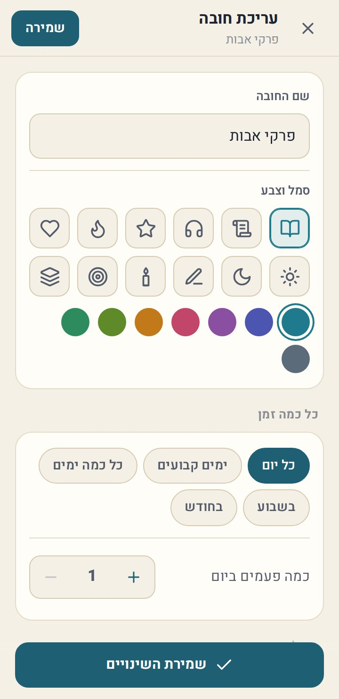
קורא הספרים
הספר נפתח בדיוק בעמוד של היום, וזוכר איפה הפסקתם.
- הפס למעלה"הלימוד של היום: עמודים 4–5 · 1 מתוך 2". אחרי העמוד האחרון: "קראת את עמודים 4–5. לחץ סיימתי".
- סיימתימסמן את החובה ומקדם את הספר. אם קראתם יותר (למשל עד עמוד 7), ההמשך מתחיל מעמוד 8.
- דפדוףבחצים, או החלקה ימינה לעמוד הבא, כמו בספר עברי.
- מספר העמודלחיצה עליו: מעבר לכל עמוד, או חזרה לעמוד של היום.
- הגדלהבכפתורים, בצביטה בשתי אצבעות או בהקשה כפולה.
- הירחמצב לילה: דף כהה לקריאה בחושך.
גם ספר סרוק של מאות עמודים נפתח מהר: הוא נטען בחלקים ישר מהזיכרון של הטלפון, בלי אינטרנט.
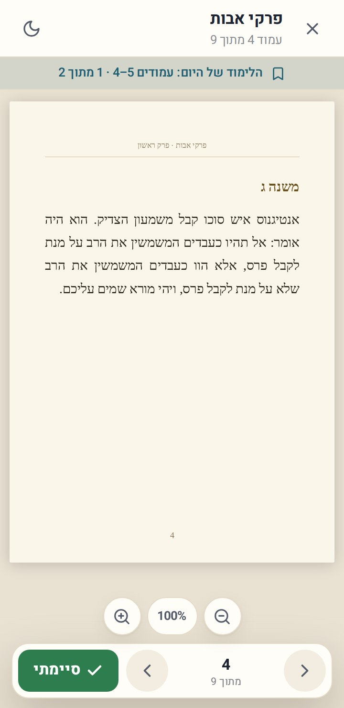
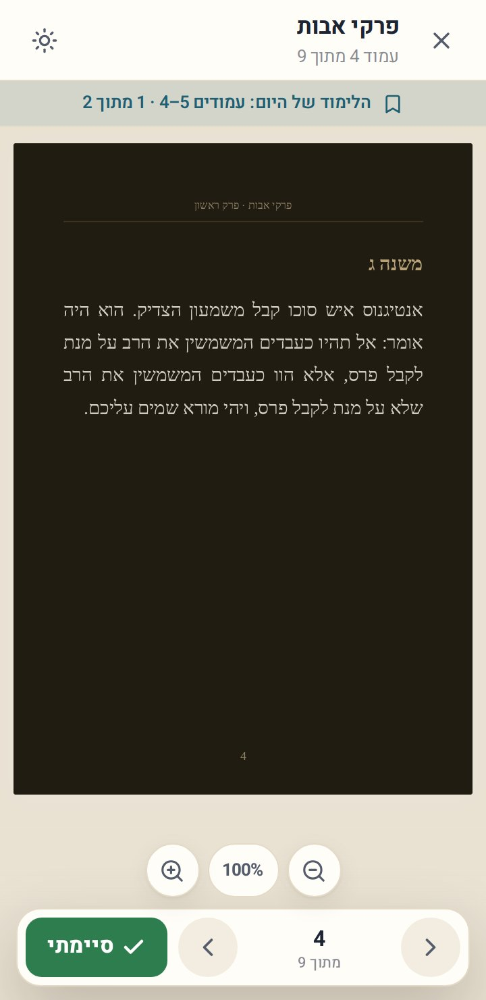
נגן השיעורים
ממשיך מאיפה שעצרתם, ומראה מה המטרה של היום.
- המטרה"הלימוד של היום: השיעור הזה" או "20 דקות".
- 15 אחורה, 30 קדימהדילוג בתוך השיעור. הפס מראה איפה אתם.
- שיעור קודם / הבאמעבר בין השיעורים בסדרה.
- מהירותמ-0.8× עד 2×, ונשמרת לפעם הבאה.
- רשימת השיעוריםכל השיעורים בסדרה. לחיצה עוברת לשיעור.
- סיימתיכשמגיעים ליעד מופיע "השלמת את הלימוד של היום!". "סיימתי" מסמן ומקדם לשיעור הבא, או לדקה שבה עצרתם.
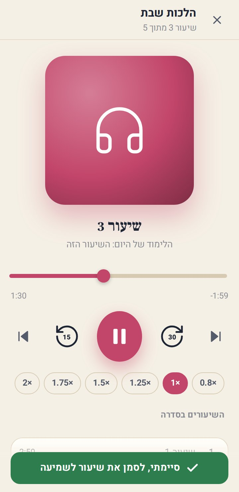
ספרייה
הספרים והשיעורים שלכם, שמורים בתוך האפליקציה.
- הוספת ספרבוחרים קובץ PDF מהטלפון. הוא מועתק לאפליקציה, נשאר גם אם הקובץ המקורי נמחק, ונספרים העמודים.
- הוספת שיעוריםבוחרים קובץ שמע אחד או כמה. כמה קבצים הופכים לסדרה אחת, מסודרת לפי השם (שיעור 2 לפני שיעור 10), והשם נקבע לבד, למשל "הלכות שבת".
- לחיצה על ספר או סדרהפתיחה, יצירת חובה ממנו, הוספת שיעורים לסדרה, שינוי שם או מחיקה מהטלפון (אחרי אישור).
- הגודל בטלפוןכמה מקום הספרייה תופסת.
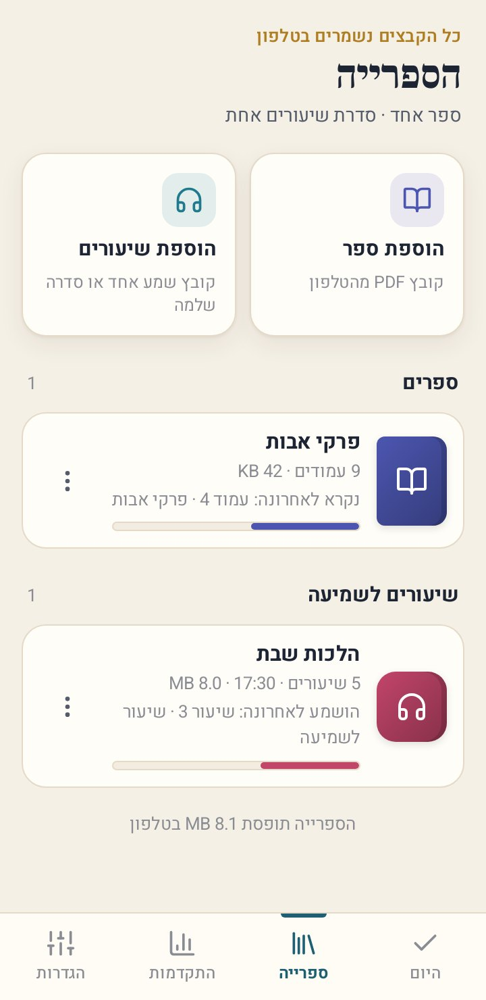
התקדמות
איך הולך, בכמה מספרים ובלוח צבעוני.
- רצףהרצף הנוכחי והרצף הארוך ביותר: ימים רצופים שבהם הושלם כל מה שהיה צריך.
- השבוע ו-30 יוםכמה פעמי לימוד השבוע, ואחוז ההשלמה ב-30 הימים האחרונים.
- לוח חמישה שבועותכל יום צבוע לפי כמה הושלם. לחיצה על יום פותחת אותו במסך "היום", ושם אפשר לסמן ולתקן.
- לפי חובהאחוז השלמה, כמה פעמים בסך הכול, רצף, ובספר: איפה אתם בו ("3 מתוך 7 עמודים") ומתי תסיימו בקצב הזה, בתאריך עברי.
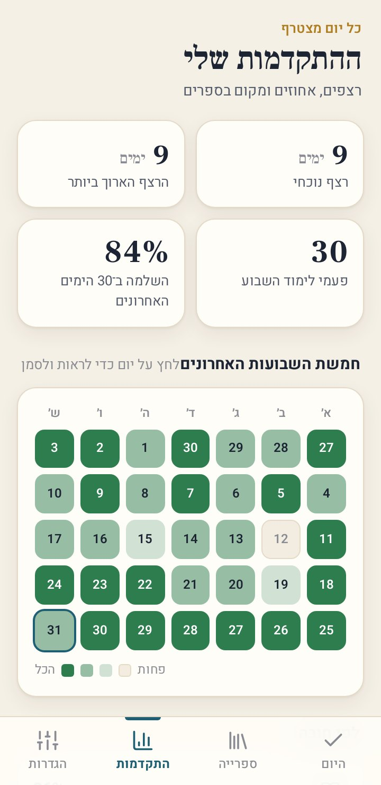
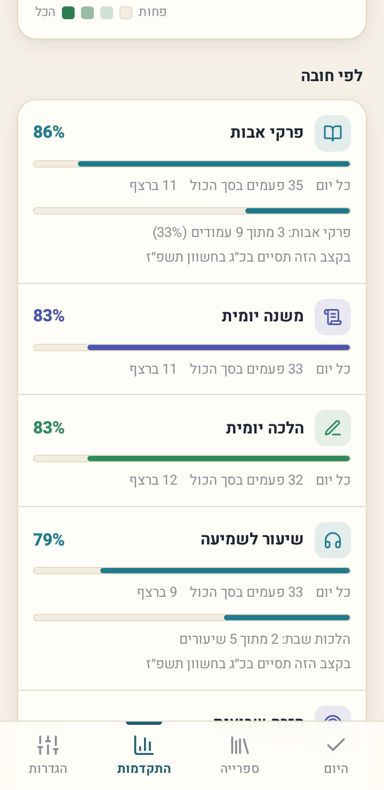
תזכורות
תזכורת מגיעה רק כשבאמת צריך, ושותקת בשבת ובחג.
- לכל חובהעד 5 שעות ביום. התזכורת נשלחת רק אם החובה עוד לא סומנה, ומראה מה ללמוד ("עמודים 4–5 · פרקי אבות").
- סיימתי ✓כפתור בתוך ההתראה: מסמן בלי לפתוח את האפליקציה.
- ללמוד עכשיוכפתור בתוך ההתראה: פותח את הספר או השיעור בעמוד הנכון.
- סיכום בסוף היוםבשעה שבחרתם: "נשארו 2 חובות להיום". אם הכל הושלם, לא נשלח כלום.
- שקט בשבת ובחגאין התראות מ-45 דקות לפני השקיעה בערב שבת או חג ועד 15 דקות אחרי צאת הכוכבים, לפי העיר (34 ערים בישראל).
- גם בלי אינטרנטהתזכורות מתוזמנות בטלפון לשבוע קדימה ומתעדכנות בכל סימון, ולכן מגיעות גם כשהאפליקציה סגורה.
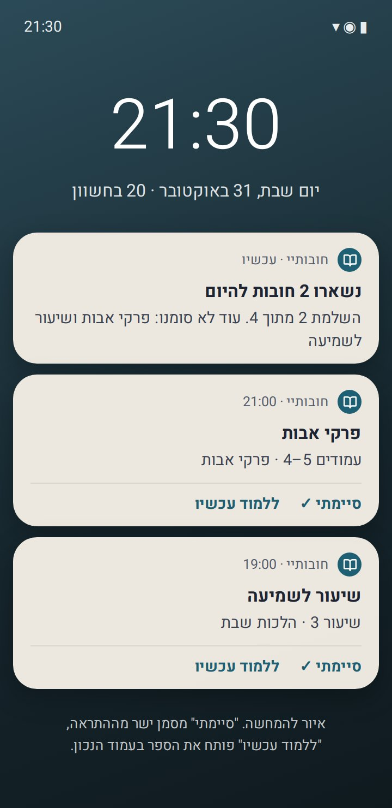
הגדרות
החובות, הספרים, התזכורות, המראה והגיבוי.
- החובות שליכל החובות עם התדירות ושעות התזכורת. לחיצה פותחת עריכה, והחצים משנים את הסדר. "+ הוספת חובה" בסוף.
- ספרים ושיעוריםמעבר לספרייה, הוספת ספר PDF והוספת קבצי שמע.
- תזכורותהפעלת ההתראות אם הן כבויות, שעה מדויקת, סיכום בסוף היום ושעתו, שקט בשבת ובחג, עיר, ושליחת התראת בדיקה.
- ערכת צבעיםלפי הטלפון, בהירה או כהה.
- היום מתחלף בשעה00:00 עד 04:00. מי שלומד אחרי חצות מסמן על היום הקודם.
- רטט בסימוןרטט קצר בכל סימון.
- גיבוי לקובץהחובות, הסימונים וההגדרות בקובץ אחד, לשמירה בדרייב, בוואטסאפ לעצמכם או במחשב. הספרים עצמם לא נכנסים לגיבוי, כי הם יכולים להיות גדולים מאוד.
- שחזור מגיבויבטלפון חדש. ספר שחסר יבקש "בחירת הקובץ מחדש" ויחזור למקום שבו הייתם.
- מחיקת כל הסימוניםמתחילים מחדש. החובות והספרים נשארים.
- שיתוף האפליקציהלשלוח לחברים. שיתוף עם חברים
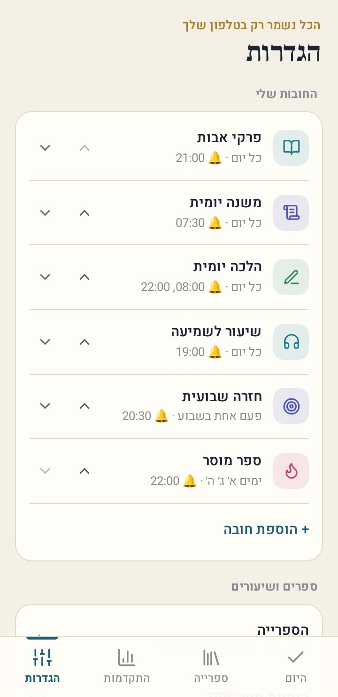
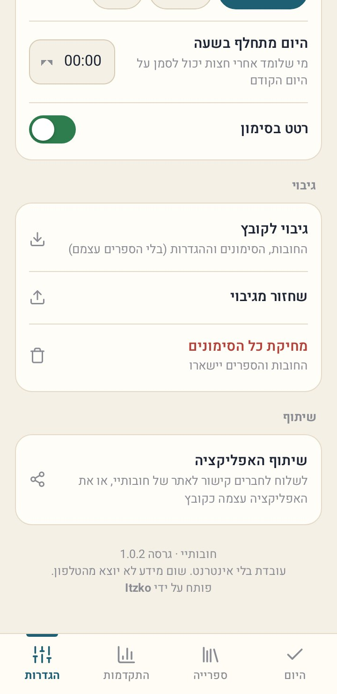
גרסה חדשה
כשיוצאת גרסה חדשה, היא מופיעה כאן באתר, ב"מה חדש" למעלה.
- איך מעדכניםלוחצים "הורדה לאנדרואיד" למעלה ומתקינים את הקובץ מעל האפליקציה הקיימת.
- הנתונים נשמריםהחובות, הסימונים, הספרים והשיעורים נשארים בדיוק כמו שהיו.
- איזו גרסה אצליהגדרות ← בתחתית המסך
פותח על ידי Itzko
חובותיי היא אפליקציה עצמאית של Itzko: בלי פרסומות, בלי הרשמה ובלי אינטרנט. החובות, הסימונים והספרים נשארים רק אצלכם בטלפון.